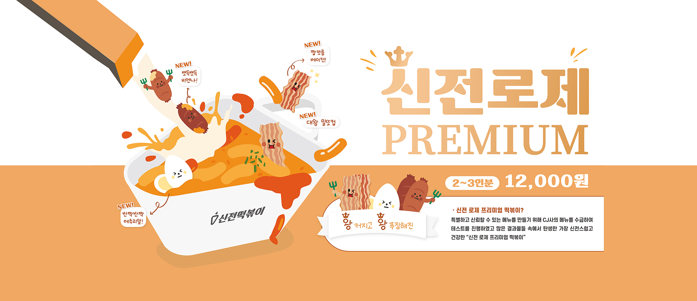
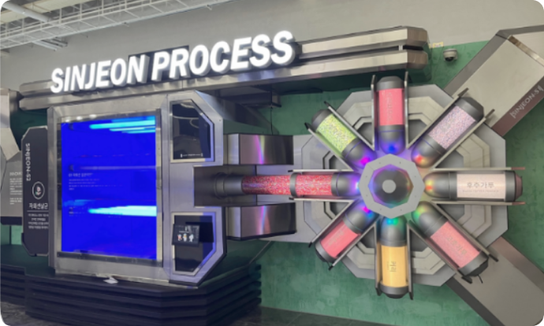

메인 비주얼

SINJEON FOOD SYS
우리는 꿈을 심고, 새로운 문화를 만들어 갑니다.
-

- 떡볶이양념 최초 HACCP 인증
- 건강한 음식 문화 “신전떡볶이”
- HACCP은 가장 효과적인 식품 안전 관리 체계로 인정 받고 있습니다. 품격있는 떡볶이 문화를 만들기 위해서 신전은 떡볶이 프랜차이즈 업계 최초 떡볶이 양념 HACCP인증을 받았습니다.
-
- 782호점 달성
- 떡볶이 프랜차이즈 매장수 1위
- 2022년 기준 국내 및 해외 가맹점 782호점을 달성. 정보공개서 기준 업계매장수 1위 달성. 오늘의 ‘신전’은 본사와 가맹점주의 땀과 노력입니다. 신전의 역사는 언제나 그들과 함께 있습니다.
INFORMATION
신전떡볶이를 사랑해주시는 고객 여러분께 감사의 말씀을 드립니다.
우리는 꿈을 심고, 새로운 문화를 만들어 갑니다.
- 건전한 떡볶이 문화를 만들어가는 ‘신전’의 역사
- 신전떡볶이를 사랑해주시는 고객에 대한 감사
- 본사와 가맹점주와의 상생 문화를 실천하겠다는 다짐